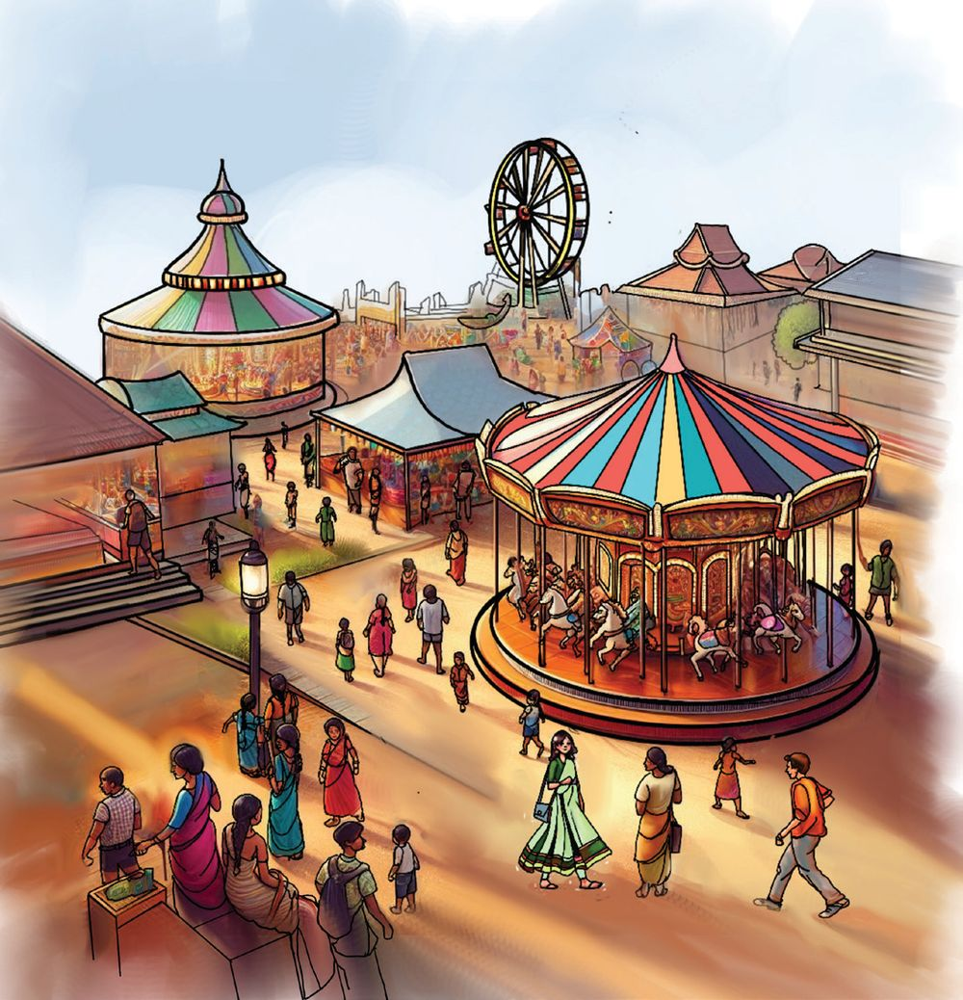

അമ്മ അടുക്കള-യിൽ പപ്പടം കാച്ചുക-യാണ്. ഫാത്തിമ ഒരു പപ്പടം എടുത്തു.
രണ്ട്പേരും
പകുതിയാക്കി
എടുത്തോള്ളൂ
ഇത്
പകുതിയില്ല
അമ്മ ഒരു പപ്പടം രണ്ടായി മടക്കി മുറിച്ച് അവർക്ക് കാച്ചിക്കൊടുത്തു.
തുല്യഭാഗം
ഒരു റിബണിനെ എങ്ങനെ രണ്ട്
തുല്യഭാഗ-ങ്ങളാക്കാം?
ഒരു പൈപ്പായാലോ?
119
Page 40
Figure fig_ch03_p040_01 (Page 40)

Figure fig_ch03_p040_02 (Page 40)
പകുതിയാക്കാം
○
○
○
○
○
○
○
○
○
കുത്തുക-ളിലൂടെ വരച്ച് ചതുരത്തെ രണ്ട് തുല്യഭാഗ-ങ്ങളാക്കൂ.
അതിൽ ഒരു ഭാഗത്തിന് നിറം നൽകു.
വട്ടത്തിന്റെ നടുവിലെ കുത്തിലൂടെ ഒരു വര വരച്ച്
വട്ടത്തെ രണ്ട് ഭാഗങ്ങളാക്കൂ.
രണ്ട് ഭാഗങ്ങളും തുല്യമല്ലേ?
ഒരെണ്ണത്തിന് നിറം നൽകൂ.
ചതുര-ത്തെയും വട്ടത്തെയും പകുതിയാക്കി- നിറം നൽകിയല്ലോ?
ഇതിൽ ഓരോ ഭാഗത്തെയും അതിന്റെ രണ്ടിലൊന്ന് എന്ന് പറയാം.
രണ്ട് തുല്യഭാഗ-ങ്ങളാക്കിയ-തിൽ ഒരു ഭാഗമാണ് രണ്ടിലൊന്ന്. ഇതിനെ
എന്നെഴുതും. രണ്ടിലൊന്ന് എന്ന് വായിക്കും.
അരയെന്നും
1
2
എത്ര ഭാഗം?
രണ്ടിലൊന്ന്
ആണ് പകുതി.
120
പറയാം.
വട്ടത്തിന്റെ എത്രഭാഗ-ത്തിനാണ് ചുവപ്പു
നിറം നൽകിയിരിക്കുന്നത്?
എത്രഭാഗ-ത്തിനാണ് നീല നിറം നൽകിയിരിക്കുന്നത്?
ചതുര-ത്തെ 12 ഭാഗമാക്കിയത് നോക്കൂ.
മറ്റേതെല്ലാം രീതിയിൽ 12 ഭാഗമാക്കാം? 12 ഭാഗത്തിന് നിറം നൽകൂ.
ഇവ 12 ആണെന്ന് എങ്ങനെ ഉറപ്പു വരുത്താം?
കടലാസിൽ വരച്ച് മുറിച്ച് ചേർത്തു വച്ചു നോക്കൂ.
1
2
എന്നത് പകുതി
തന്നെയാണ്.
മിഠായി പങ്കുവയ്ക്കാം
തീർഥയുടെ ജന്മദിന-ത്തിനു അവൾ നൽകിയ
4 മിഠായികളുമായാണ് ഫാത്തിമ വീട്ടിലെത്തിയ-ത്.
1
നാല് മിഠായിക-ളുണ്ട്.
4 ന്റെ ഭാഗം
2
"എനിക്കും മിഠായി വേണം'. ഫവാസ് പറഞ്ഞു.
2 ആണ്.
"പകുതി തരാം'.
ഫാത്തിമ അവന് പകുതി എണ്ണം മിഠായി നൽകി.
എത്ര- മിഠായിക-ളായിരിക്കും നൽകിയത്?
ഫാത്തിമയ്ക്ക് 6 മിഠായികളാണ് കിട്ടിയിരുന്നെങ്കിലോ?
അത് 4 ന്റെ
പകുതി തന്നെയല്ലേ.
16
വിരിഞ്ഞതെത്ര?
മുട്ടകൾ അടവ-ച്ചു. അതിൽ പകുതി എണ്ണം മുട്ടകൾ
വിരിഞ്ഞു. വിരിഞ്ഞവ എത്ര?
വിരിഞ്ഞതിൽ പകുതി എണ്ണം പൂവനാണ്.
പൂവനെത്ര?
ഫാത്തിമ-യുടെ ക്ലാസ്സിൽ 32 കുട്ടിക-ളുണ്ട്. അവരിൽ പകുതി പേർ
പെൺകുട്ടിക-ളാണ്. പെൺകുട്ടിക-ളുടെ എണ്ണമെത്ര?
122
എണ്ണം
2 എണ്ണം
4 എണ്ണം
2 എണ്ണം
8 എണ്ണം
1 ഡസൻ
1 ഡസൻ
2
പച്ചക്കറിത്തോട്ടം
ഫാത്തിമ-യുടെ പച്ചക്കറിത്തോട്ടം ചതുരാകൃതിയിലാണ്. അതിനെ 4 തുല്യഭാഗങ്ങളാക്കി.
ഒരു ഭാഗത്ത് പയറും
ഒരു- ഭാഗത്ത് മത്തനും രണ്ട് ഭാഗത്ത്
ചീരയും കൃഷി ചെയ്തു.
പയർ
ചീര
ആകെ എത്ര ഭാഗ- ങ്ങ - ള ആ- ക്ക ഇ- യ ഇ- ട്ട ഉ- ണ്ട ് ?
അതിൽ എത്രഭാഗ-ത്താണ് പയർ കൃഷി
ചെയ്തിട്ടുള്ളത്?
ചീര
മത്തൻ
പയർ കൃഷി ആകെയുള്ളതിന്റെ നാലിലൊന്നു ഭാഗത്താണ്.
നാലൂ തുല്യഭാഗ-ങ്ങളാക്കിയ-തിൽ ഒരു ഭാഗത്തിന് നാലിലൊന്ന് എന്നാണ്
123
നാലൂ തുല്യഭാഗ-ങ്ങളാക്കിയ-തിൽ ഒരു ഭാഗത്തിന് നാലിലൊന്ന് എന്നാണ്
കാൽ ഭാഗം
പറയുക. ഇതിനെ എന്നെഴുതാം.
എന്നും പറയാം.
മത്തൻ കൃഷി ചെയ്തിരുന്നത് എത്ര ഭാഗത്താണ്?
ഇത് എങ്ങനെ എഴുതും?
എങ്കിൽ ചീര കൃഷി ചെയ്തിരിക്കുന്നത് എത്ര ഭാഗത്താണെന്ന്
എങ്ങനെ എഴുതാം.
1
4
വിളവെടുപ്പ്
പച്ചക്കറിത്തോട്ടത്തിൽ നിന്നും ഒരു വലിയ മത്തങ്ങ വിളവെടുത്തു.
അവർ മത്തങ്ങ നാല് തുല്യഭാഗങ്ങളാക്കി. ഓരോന്നും മത്തങ്ങയുടെ എത്ര
ഭാഗമാണ്?
ഒരു ഭാഗം അവർക്കു വേണ്ടി മാറ്റി വച്ചു ബാക്കിയുള്ളത് എത്ര ഭാഗമാണ്?
നാല് തുല്യഭാഗ-ങ്ങളാക്കിയ-തിൽ 3 ഭാഗങ്ങളെ നാലിൽ മൂന്ന് എന്നാണ് പറയുന്നത്. ഇതിനെ 34 എന്നെഴുതാം.
മുക്കാൽ എന്നും
ഫവാസ് ഒരു ഭാഗം മത്തങ്ങയുമായി എബിയുടെ വീട്ടിൽ പറയാം.
പോയി. ഫാത്തിമ രണ്ട് ഭാഗങ്ങളിൽ ഒന്ന് തീർഥയുടെയും
മറ്റേത് നന്ദുവിന്റെയും വീട്ടിൽ നൽകി.
ഫവാസിന്റെ കൈയിലുള്ള ഭാഗത്തെ സൂചിപ്പിക്കുന്നത്
എങ്ങനെയാണ്
ഇതുപോലെ ഫാത്തിമ കൊണ്ടുപോയത് എങ്ങനെ സൂചിപ്പിക്കും?
124
Page 45
Figure fig_ch03_p045_01 (Page 45)
നിറം നൽകിയ ഭാഗം
നിറം നൽകിയിരിക്കുന്ന ഭാഗത്തെ എങ്ങനെ സൂചിപ്പിക്കുമെന്ന് വലതു
വശത്തെ ചതുര-ത്തിൽ എഴുതൂ.
വരച്ച് നിറം നൽകാം
ഒരു ചതുരത്തിന്റെ 14 ഭാഗം എങ്ങനെയെല്ലാം സൂചിപ്പിക്കാം? ഓരോ
ചതുര-ത്തിലും വ്യത്യസ്ത രീതിയിൽ വരച്ച് 14 ഭാഗം നിറം നൽകൂ.